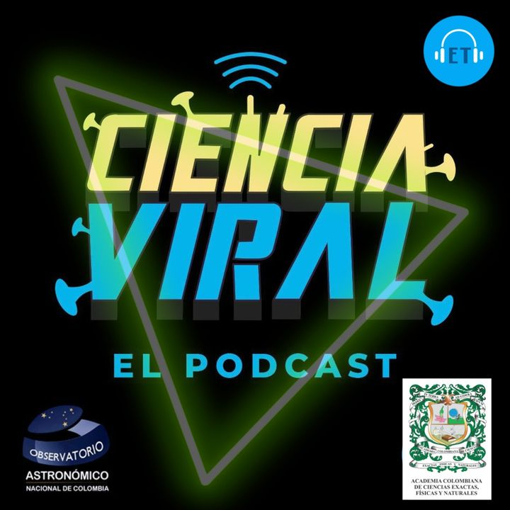

PÓDCASTCiencia Viral
Ciencia Viral es el pódcast que realiza junto al periodista científico Nicolás Bustamante. Conversan sobre descubrimientos, actualidad y preguntas de la ciencia, con explicaciones cercanas y voces expertas para explorar su relación con la vida cotidiana.
Escuchar en Spotify ↗